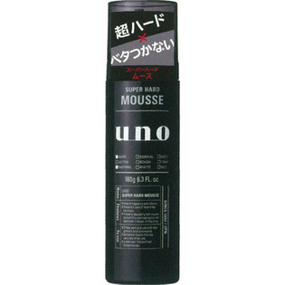

返回列表
产品名称：ウーノ スーパーハードムース

資生堂 ウーノ スーパーハードムース １８０ｇ
メーカー 資生堂
JANコード 4901872447039
商品の特徴
超ハードなセット力できっちり整髪できる泡状整髪料で、ヘアスタイルを1日中キープします。ベタつきやゴワつきがなく、湿気にも強い強力なセット力。無香料・無着色・ノンオイリー。
成分・分量
-
用法及び用量
＜使い方＞
缶をよく振り、下向きに適量を出し、スタイリングします。